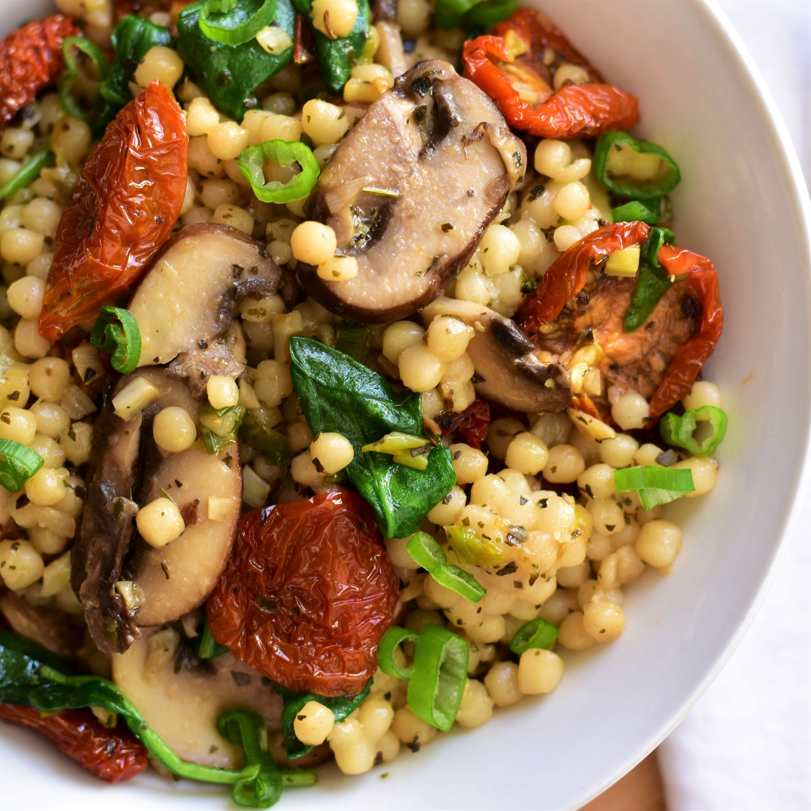

Couscous with Mushrooms and Sun-Dried Tomatoes
Couscous with Mushrooms and Sun-Dried Tomatoes

Description
Lively sun-dried tomatoes and hearty portobello mushrooms are tossed with couscous in this satisfying entree.
Ingredients
- 1 cup dehydrated sun-dried tomatoes
- 1½ cups water
- ½ (10 ounce) package couscous
- 1 teaspoon olive oil
- 3 cloves garlic, pressed
- 1 bunch green onions, chopped
- ⅓ cup fresh basil leaves
- ¼ cup fresh cilantro, chopped
- ½ lemon, juiced
- salt and pepper to taste
- 4 ounces portobello mushroom caps, sliced
Directions
- Place the sun-dried tomatoes in a bowl with 1 cup water. Soak 30 minutes, until rehydrated. Drain, reserving water, and chop.
- In a medium saucepan, combine the reserved sun-dried tomato water with enough water to yield 1 1/2 cups. Bring to a boil. Stir in the couscous. Cover, remove from heat, and allow to sit 5 minutes, until liquid has been absorbed. Gently fluff with a fork.
- Heat the olive oil in a skillet. Stir in the sun-dried tomatoes, garlic, and green onions. Cook and stir about 5 minutes, until the green onions are tender. Mix in the basil, cilantro, and lemon juice. Season with salt and pepper. Mix in the mushrooms, and continue cooking 3 to 5 minutes. Toss with the cooked couscous to serve.
Return to Homepage